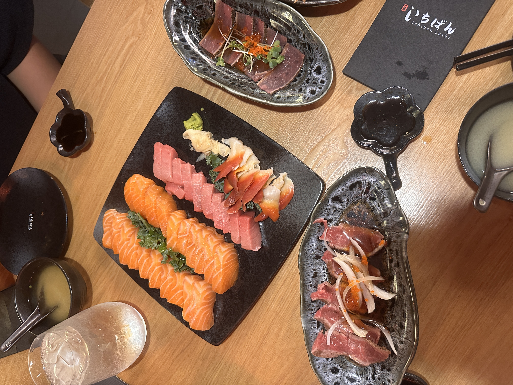
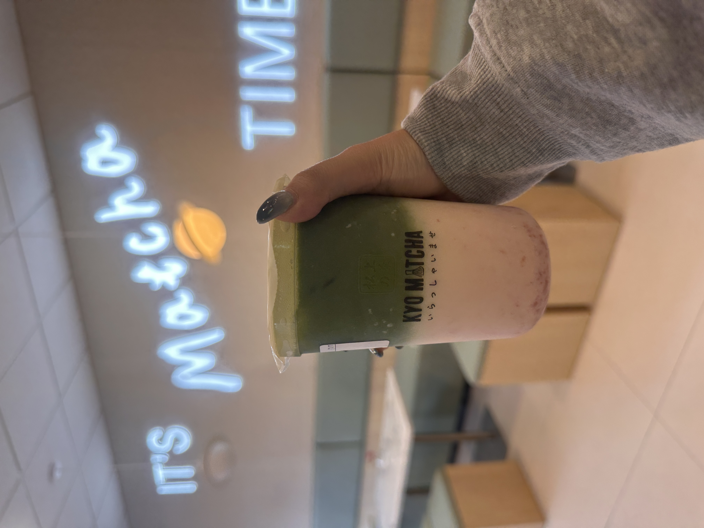
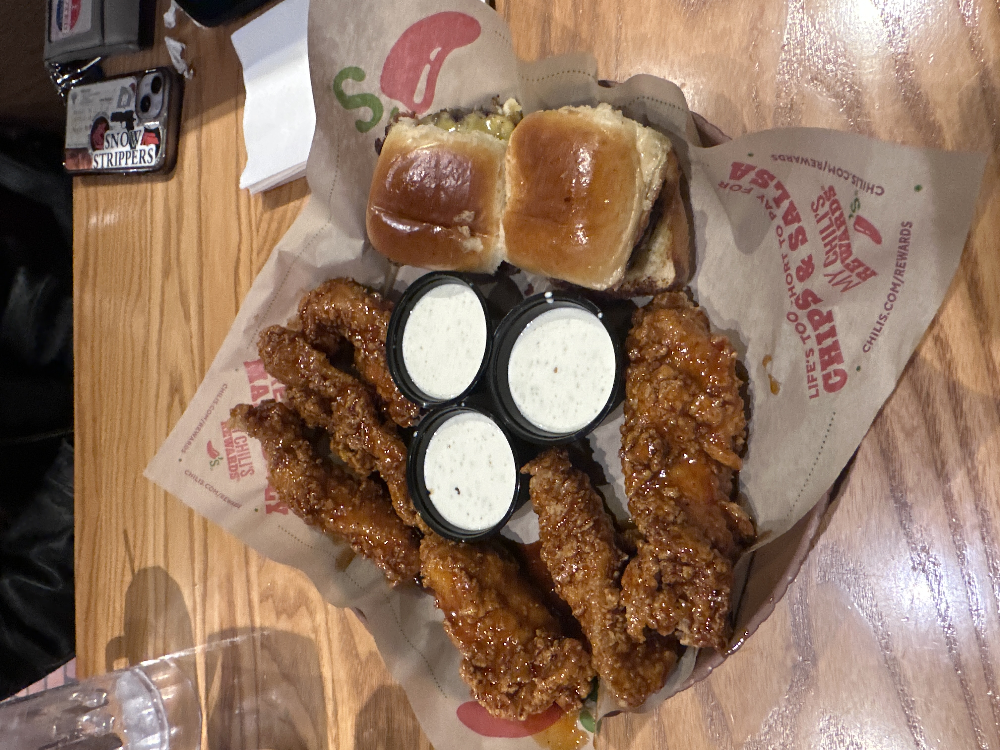
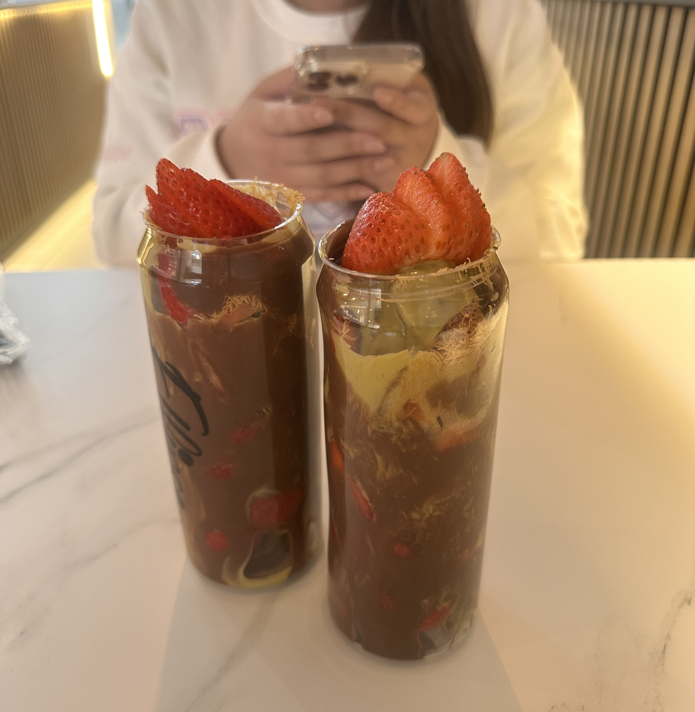

Foods I Love
Sushi/Sashimi

I love sushi because each piece is fresh with delicate flavors and beautiful colors.
Matcha Latte

I love matcha because its rich, earthy flavor and vibrant green color that makes me calm and energized in every sip.
Chili's Triple Dipper

I love Chili's Triple Dipper because it's the perfect way to enjoy three different appetizers at once, I enjoy the honey chipole crispers the most.
Dubai Chocolate Covered Strawberries

I love Dubai Chocolate covered strawberries and not just beacuse of the trend but because I the fresh strawberries combined with the chococlate and pistacio butter.